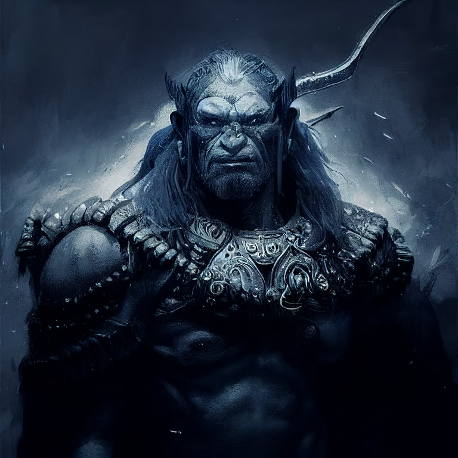

BooBah D&D

Hey Matt, this page provides the character background for Chief Obolo, the level 6 orc monk you'll be playing.
A link to your character sheet is here. I just auto-generated this guy so you may want to tweak or create him yourself. You get cold resistance and double ki points.

You are a "blue" orc, a rare lineage of unusually gifted orcs hailing from the Silver Marches. Blue orcs have blue-purple skin and white hair and eyes. You are tall for your kind, standing 6'8" and are both lithe and strong. You are in your prime at 25 years old, and prefers minimalistic clothing of hide and linen - even in extreme cold. Your face is serene for any humanoid, especially an orc, and you speaks calmly in almost any circumstance.
Your father, Kraff, was the first blue orc to lead the Skull Muncha tribe, before that the tribes history is vague history of infighting and warring amidst the Grull Mountains (known to the surface folk as Spine of the World Mountains). You know little about your father's leadership apart from his killing several would-be rivals and his momentous decision to teach his fellow orcs to channel their rage towards productive ends namely metallurgy and smithing. Under your fathers leadership the Skull Muncha's became a well disciplined and armed force and were able to carve out a significant territory away from rival tribes. Pressure from a united front of these rivals caused your father to lead the Skull Muncha's to the surface in search of safer digs. Traveling south away from the mountains he founded the hamlet of Grundl at the edge of the Surbin River.
At about this time you and your sister, Whichita, were born. You spent no time in the town, instead being sent with your sister to tutor in the ways of magic and meditation under a cruel frost giant named Frostberg. Your sister took naturally to magecraft but you struggled and instead focused on honing your physical abilities and mental fortitude. This angered Frostberg but for some reason he did not kill you, despite his frequent threats to do so. You did not understand why your father sent you here and still don't, though you suspect your not knowing your mother is relevant... you never met another blue orc apart from your sister and father and Frostberg was fond of "bloodcrafting", or splicing together living creatures to form abominable fiends and mindless icy thralls.
Four years ago Frostberg sent you to Grundl to help your aging father manage the town. When you arrived you learned that your father had gone to a rift in the nearby foothills to meditate with Ice Toads. You went and found that he had been eaten by the toads who told you you must now reign, and prove yourself by surviving in their digestive juices for 3 days. You submitted and managed to survive the trial, returning to the town their new leader. Each year you go back and face the trial again, each year it gets easier. You didn't care much about the town or it's people apart from teaching them to focus their rage on crafting, most of your time was spent in the wilds, though some mysterious bond kept you bound to the town and its management. One day in the wilds you found a half frozen gnome named Findl who you saved and who was eager to handle the towns affairs. He did this well, and even opened up some trading with humans and dwarves.
This year during the trial, about 2 weeks ago, you were meditating in the toad's body when it was abruptly cut away from you. Several adventurers had attacked the toads and killed them all. This would have angered you but the toads had eaten your guards which had never happened before. Speaking with the adventurers, who often quarreled amongst themselves, you learned that your town was in trouble, with all the townsfolk being led off in the night. This prompted you to return with them and you were shocked to find their words true. You decided to travel with them to the dwarf-hold of Mirabar in hopes of securing aid and finding your people.
Your companions seem more or less criminal, but have treated you well. They have brought you to meet with their cheif, a merchant named Broglin, who sent the adventurers to your home to establish trade - the deal sounds too good to be true - your arms and armor in exchange for delicious fish and mollusks! Now you wait for Broglin in his common room alongside your new companions.
You are an orc with blue skin named Obolo, you want to save your people, but don't even know what happened to them; you have travelled into a dwarf town with some adventurers who say they know someone who can help.